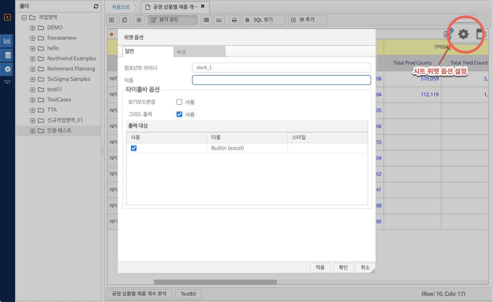

네비게이션
7.4. 결과 시트 위젯 설정하기
결과 시트 위젯
결과 시트 위젯은 데이터그리드, 차트 등 데이터를 표현하는 리포트의 단위 위젯 유형을 의미한다. 한개의 리포트에 여러개의 결과 시트 위젯을 추가하여 복수개의 결과화면을 하나의 리포트에서 조회 하고 데이터 시각화에 사용할 수 있다.
리포트 생성시 초기 결과 시트가 추가되며, 리포트는 최소 한개 이상의 결과 시트 위젯을 가진다.
결과 시트 위젯의 추가
(그림 : 리포트 결과 시트 위젯 추가)
결과 시트 위젯 속성 편집
결과 시트 위젯의 속성을 편집하려면 리포트를 편집 모드로 전환한다. 위젯 타이틀 헤더의 툴바에 "위젯 옵션" 버튼을 클릭하여 결과 시트 옵션창을 연다.

(그림 : 결과 시트 툴바의 위젯 옵션 버튼 위치 및 결과 시트 옵션 화면 레이아웃)
결과 시트 옵션 일반 탭 화면 레이아웃
컴포넌트 아이디 : 시스템에서 자동 생성되는 시스템 아이디
이름 : 결과 시트 위젯의 타이틀에 사용할 텍스트를 입력 한다.
타이틀바 옵션 : 타이틀바에 제공할 옵션 사항을 표시한다.
-. 보기 모드 변경 : 타이틀바에 그리드 / 차트 보기 버튼을 추가하여 보기 모드를 변경할 수 있도록 한다.
-. 그리드 출력 : 타이틀바에 출력 버튼을 표시하고 출력 버튼 클릭 시 내용을 사용자가 파일로 다운로드 할 수 있도록 한다.
-. 출력 대상 : 타이틀바 그리드 출력으로 표시할 출력파일의 유형을 선택한다.
결과 시트 옵션 속성 탭 화면 레이아웃
그리드 설정 : 결과 시트 위젯이 그리드 보기 모드인 경우 적용되는 옵션 사항을 제공한다.
-. 컬럼 폭을 패널에 맞추어 확장 : 그리드의 컬럼 개수 및 전체 폭이 위젯의 폭보다 작은 경우 자동으로 그리드 컬럼의 폭을 조절하여 사용자가 내용을 볼 수 있도록 한다.
(그림 : 결과 시트 옵션 속성 화면 레이아웃)